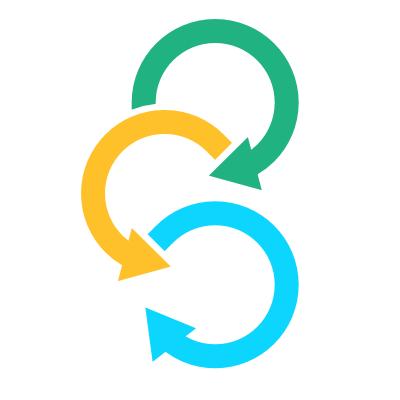

Clima Capital Partners

Sélection des observateurs
secteur privé
2021-2023
Introduction
Depuis la création des fonds d’investissement climatique (CIF) en 2008, l'engagement actif des observateurs de la société civile, du secteur privé, des peuples autochtones et des communautés locales a été un élément important de la structure de gouvernance des CIF. Il a permis une participation importante, une communication transparente et une action plus efficace sur le terrain.
En août 2020, le processus de sélection des observateurs pour 2021-2023 a été annoncé lors du webinaire organisé conjointement par les CIF, RESOLVE et Clima Capital Partners..
Les processus de sélection des observateurs seront menés simultanément pour
-
Le secteur privé
-

La société civile
-
Edna Kaptoyo
Pastoral Communities Empowerment, Kenya
Grace BalawagTebtebba Foundation, PhilippinesLes peuples autochtones
Un comité de sélection conjoint des observateurs (JOSC) de la société civile, du secteur privé et des peuples autochtones sera formé afin de soutenir les processus de sélection et d'aider à tirer les leçons des efforts déployés par ce réseau.
À propos des fonds d’investissement climatique (CIF)
Avec un budget de 8 milliards d’USD, les CIF accélèrent l'action climatique en favorisant les transformations dans les technologies propres, l'accès à l'énergie, la résilience climatique, les forêts durables et le développement durable dans les pays en développement et à revenu intermédiaire, notamment en pilotant de nouveaux modèles commerciaux.
2,3 milliards USD ont été alloués à des projets du secteur privé. Il s'agit d’un financement supérieur à tout autre fonds climatique dédiés aux investissements du secteur privé destinés à promouvoir des économies sobres en carbone et résilientes au climat dans les pays membres des CIF.
-
8 milliards
USD contributions des pays donateurs
-
53 milliards
USD cofinancements attendus
-
72 des pays
investissements climato-intelligents
-
57%
Financement CIF du secteur public
-
43%
Financement CIF du secteur privé
-
79%
Financement CIF approuvé par des BDM et en cours de mise en œuvre
Les CIF sont constitués de deux fonds fiduciaires :
- Le Fonds pour les technologies propres (CTF) il a pour mission de promouvoir des investissements dans des technologies propres.
- Le Fonds stratégique pour le climat (SCF) il encourage la réalisation de projets pilotes pour faire face aux défis liés au changement climatique. Le SCF comprend trois programmes ciblés dirigés chacun par un comité technique:
- Programme d’investissement forestier (FIP)
- Programme pilote pour la résistance aux changements climatiques (PPCR)
- Programme de valorisation à grande échelle des énergies renouvelables (SREP)
Par ailleurs, le sous-comité mondial, récemment mis sur pied, englobe quatre nouveaux programmes d’action climatique ayant respectivement pour thèmes les énergies renouvelables ; les populations, la nature et le climat ; les industries sobres en carbone ; et les villes climato-intelligentes.
Des organisations siégeant à titre d’observateurs du secteur privé seront choisies pour le CTF, les trois comités techniques du SCF et le sous-comité mondial décrits. Ces comités mettront chacun deux sièges à leur disposition:
- un observateur provenant d’un pays donateur
- un autre provenant d’un pays emprunteur
Participation des observateurs
Mandat
Les organisations ayant le statut d’observateur seront désignées pour un mandat de trois ans débutant en janvier 2021. Leur mandat sera reconductible une fois. Ceux qui souhaiteront effectuer un second mandat devront se soumettre à nouveau au processus de sélection.
Responsabilités
Les observateurs de la société civile, des entités privées et des populations autochtones remplissent plusieurs rôles importants au sein des CIF : représentation des groupes constitutifs, plaidoyer politique, suivi des programmes et sensibilisation/communication. Il existe trois degrés d’intervention:
- participation active au sein des organes décisionnels des CIF à l’échelle mondiale;
- participation à la formulation et au suivi des stratégies d’action climatique à l’échelle nationale;
- participation à la sélection et au suivi, à la communication des résultats et à l’évaluation de la mise en œuvre des projets d’action climatique à l’échelle locale.
Pour remplir ces rôles, les observateurs sont tenus d’entretenir des contacts actifs avec leurs groupes constitutifs locaux, nationaux, régionaux et/ou mondiaux pour veiller à tenir compte, dans leurs actions et leurs décisions, des points de vue et des intérêts de ces derniers.
Plus précisément, en leur qualité d’observateurs actifs au sein des organes de décision des CIF, il leur incombe : i) de préparer leur participation aux réunions et de consulter les autres acteurs de leur groupe d’intérêt concernant les enjeux figurant à l’ordre du jour des réunions des CIF ; ii) de représenter les intérêts de leur groupe, et non pas uniquement ceux de leur propre organisation ; iii) d’appliquer les meilleures pratiques en matière de consultation, de liaison et d’information de leurs groupes constitutifs sur leurs actions au sein des CIF. Les observateurs seront chargés de recenser et d’inviter des spécialistes externes aux réunions des comités et sous-comités. Ils devront aussi veiller à préparer et à diffuser des rapports réguliers sur leur travail de plaidoyer politique, de suivi des programmes, de réseautage et de communication.
Participation
Les personnes représentant des organisations ayant le statut d’observateur seront tenues de participer activement à trois réunions des comités des CIF (virtuelles ou en personne) chaque année en 2021, 2022 et 2023. Elles devraient aussi participer à une séance d’orientation, à environ 12 téléconférences et réunions « virtuelles », et à un Forum de partenariat au cours de leur mandat. Elles sont enfin censées contribuer concrètement au travail des CIF en participant à la préparation des documents et, après la fin de leur mandat, en siégeant éventuellement sur le comité chargé de choisir les membres du prochain groupe d’observateurs.
En règle générale, les coûts associés aux déplacements pour les réunions des comités et sous-comités sont couverts pour les représentants des populations autochtones et de la société civile venant des pays de l’hémisphère Sud. Si, en raison de la pandémie de COVID-19, les observateurs devaient assister aux réunions de manière virtuelle, des dispositions pourraient être prises au cas par cas pour faciliter la connectivité Internet. Pour les entités privées et les autres observateurs de l’hémisphère Nord, les coûts associés aux déplacements et/ou à la connexion Internet seront examinés au cas par cas.
Processus de sélection
Première étape: Sélection des observateurs du secteur privé
Des organisations siégeant à titre d’observateurs du secteur privé seront choisies pour le CTF, les trois comités techniques du SCF et le sous-comité mondial décrits ci-dessus. Ces comités mettront chacun deux sièges à leur disposition. Pour chacun des comités et du sous-comité, le Comité de sélection veillera autant que possible à désigner un observateur provenant d’un pays donateur, et un autre provenant d’un pays emprunteur. Si nécessaire, le Comité de sélection déterminera si l’organisation candidate est principalement basée dans un pays donateur ou dans un pays emprunteur.
À propos du Comité du secteur privé
Le Comité du secteur privé est composé d'anciens observateurs du secteur privé des CIF, experts dans les domaines du financement climatique, des fonds internationaux, et en particulier des CIF, et sera coordonné par CLIMA. Le Comité du secteur privé examinera les candidatures reçues et recommandera une liste restreinte de candidats au Comité conjoint de sélection des observateurs (« JOSC »).
Membres
- Daniel Basurto, International Chamber of Commerce (ICC) Mexico
- Crisanto Frianeza, Philippine Chamber of Commerce (Représentant auprès du “JOSC” – pays emprunteur)
- Olive Kigongo /Augustine Idoot, Uganda Chamber of Commerce
- Brian Louisy, St. Lucia Chamber
- Nurşen Numanoğlu, Turkish Industry & Business Association (TÜSİAD)
- Margaret-Ann Splawn, Climate Markets & Investment Association - CMIA (Représentante auprès du “JOSC” – pays donateur)
Deuxième étape : Examen par le comité de sélection conjoint des observateurs (« JOSC »)
A propos du JOSC
Lors de la sélection des observateurs, le Comité fournira des conseils sur les détails du processus, y compris les critères utilisés pour guider la sélection des candidats et, pour le processus des OSC, déterminer l'admissibilité des votants. Les membres du Comité interviendront également si des questions sont soulevées au cours du processus de sélection, aideront à choisir les candidats à inclure sur le bulletin de vote pour chaque siège, et auront le dernier mot concernant la sélection des observateurs au sein de leur propre groupe constitutif (par exemple, les représentants du secteur privé ne prendront pas de décisions concernant le processus de sélection des observateurs des OSC, etc.). Les décisions seront prises par consensus.
Timeline
-
Première étape
Lancement du processus (Sep 2020)
- Lancement du processus de sélection des observateurs et appel à candidatures
- Établissement du Comité du secteur privé
- Communication et actions de sensibilisation des réseaux mondiaux, régionaux, et nationaux
-
Deuxième étape
Etablir la liste restreinte de candidats pour chaque siège (Oct-Nov 2020)
- Le Comité du sectuer privé examine les candidatures
- Échanges bilatéraux et sensibilisation
- Échange avec des observateurs potentiels sélectionnés par le Comité du secteur privé
- Le Comité du secteur privé transmet une liste restreinte des candidates us JOSC
-
Troisième étape
Selection des observateurs (Nov-Dec 2020)
- Examen des candidats pour approvation finale selon le critères d' équilibre
- Consensus final des candidats sélectionnés
- Le candidats sont informés des décisions de sélection
- Les résultats sont annoncés
Critères de sélection des observateurs
Premier étape : Critères d’admissibilité
Les critères d’admissibilité suivants s'appliquent aux organisations de la société civile, aux entités privées et aux organisations de peuples autochtones, ainsi qu'aux personnes désignées à titre de représentants principaux et suppléants de ces organisations.
- Type d'organisation:
Les organisation ayant le statut d’observateur doivent être des organisations non gouvernementales établies, à but non lucratif. Il peut notamment s’agir d’associations du secteur privé, de groupes de recherche ou de réflexion, de groupes de plaidoyer, d’organisations communautaires, d’organismes d'aide ou de mouvements de jeunesse. - Adhésion des pays:
Les organisations ayant le statut d’observateur doivent de préférence être basées dans un pays membre des CIF à titre de donateur ou d’emprunteur. Les CIF comptent actuellement 72 pays, et ce nombre devrait continuer d’augmenter. - Antécédents institutionnels:
Les organisations ayant le statut d’observateur doivent être établies et justifier d’antécédents éprouvés en matière de promotion des politiques, de prestation de services, de participation à la recherche ou à la formation et/ou de participation aux réseaux de groupes constitutifs. - Capacité de représentation:
Les organisations ayant le statut d’observateur seront tenues de faire la démonstration des liens qu’elles entretiennent avec d’autres groupes ou réseaux locaux, nationaux et régionaux. Les personnes qui les représentant devront se montrer disposées à consulter les membres de leurs groupes constitutifs et à relayer leurs préoccupations et leurs intérêts, en faisant valoir non seulement leur propre point de vue ou celui des membres de leurs propres organisations, mais aussi celui de la collectivité au sens large à laquelle ils sont redevables. - Connaissances techniques:
Les organisations ayant le statut d’observateur et les personnes qui les représentent devront démontrer une connaissance des enjeux de l’évolution du climat, du développement respectueux de l’environnement, de la justice sociale, ainsi que du rôle et du travail des fonds climatiques. Idéalement, les observateurs devraient justifier d’une connaissance et d’une expérience avérée des enjeux qui sont au cœur des préoccupations du comité ou du sous-comité au sein duquel ils souhaitent siéger. - Conflits d’intérêts:
Pour éviter les conflits d'intérêts, les organisations ayant le statut d’observateur doivent divulguer la portée de leurs engagements financiers auprès des banques multilatérales de développement, des organismes de crédit à l’exportation et des gouvernements dans les régions où se déroulent les activités et les programmes des CIF. Si l’organisation qu’ils représentent sollicite un financement des CIF au cours de leur mandat, les observateurs devront s’abstenir de participer aux réunions au cours desquelles la demande de financement est examinée. - Préférence linguistique:
Bien qu'il soit prévu de traduire les réunions et les documents officiels en espagnol et en français, la langue de travail des CIF est l'anglais. Les personnes représentant les organisations ayant le statut d’observateur doivent donc justifier d’une connaissance pratique de l'anglais. - Capacité de communication:
Les personnes représentant des organisations ayant le statut d’observateur doivent démontrer une capacité à communiquer et à interagir activement par Internet et par téléphone. [N.B. : Les CIF évalueront au cas par cas les besoins d’assistance en matière de communication.] - Représentant principal et suppléant:
Chaque organisation ayant le statut d’observateur est censée nommer un représentant titulaire qui pourra participer aux réunions des CIF, et un suppléant qui pourra se préparer et participer activement, sur place, à ces mêmes réunions au cas où le représentant titulaire serait dans l’impossibilité d’être présent.
Deuxième étape : Critères de sélection et d’équilibre
Les critères suivants s’appliqueront à la sélection des observateurs de la société civile, des entités du secteur privées et des peuples autochtones afin d'assurer un meilleur équilibre et une plus grande équité de la représentation en termes de couverture géographique, d'équilibre entre les sexes, de diversité institutionnelle et d'inclusion des groupes constitutifs. Les responsables de l’application de ces critères mèneront des actions de sensibilisation ciblées pour encourager la candidature des organisations répondant à ces critères, lesquels seront appliqués lorsque le comité conjoint de sélection des observateurs prendra ses décisions finales.
- Couverture géographique:
L'objectif est de faire en sorte que toutes les régions (par exemple l'Asie, l'Afrique) et sous-régions (par exemple l'Asie du Sud, l'Afrique de l'Est) du monde soient représentées par l'ensemble des organisations sélectionnées pour agir en qualité d’observateurs. En outre, des efforts particuliers seront déployés pour choisir des observateurs issus de pays membres des CIF. - Équilibre entre les sexes:
L'objectif est d'avoir un nombre égal d'hommes et de femmes parmi les observateurs. Pour cette raison, des efforts particuliers seront déployés pour recruter et sélectionner des organisations représentées par des femmes et/ou qui portent un intérêt particulier à la participation des femmes à l’action climatique. - Diversité institutionnelle:
L'objectif est de faire en sorte que différents types d'organisations des trois catégories de groupes constitutifs soient représentés. Cela comprend des organisations de différents types (par exemple, ONG, groupes communautaires, réseaux, associations d’entreprises), de différents secteurs d’activités (par exemple, plaidoyer politique, recherche, prestation de services, financement, formation), de différentes tailles (par exemple, grandes et petites), et œuvrant à différents niveaux (par exemple, mondial, régional, national et local). - Inclusion des groupes constitutifs:
L'objectif est de veiller à ce que les groupes constitutifs moins bien représentés et marginalisés (par exemple les femmes, les jeunes, les autochtones, les personnes handicapées) soient représentés. Outre la recherche d'un équilibre entre les observateurs sélectionnés pour garantir la représentation de ces groupes, à l'issue du processus de sélection, des chargés de liaison seront désignés pour s’occuper des enjeux du genre, de la jeunesse, de l'inclusion et du mécanisme spécial de dons (DGM). Les observateurs peuvent se désigner eux-mêmes comme chargés de liaison pour ces groupes, et les nominations devront s’appuyer sur une expertise avérée. - Réseaux:
Pour les observateurs sélectionnés, l'objectif est d'entretenir des liens avec les principaux réseaux locaux, nationaux, régionaux et mondiaux, y compris avec d'autres fonds climatiques et processus liés au climat (par exemple, la CCNUCC).